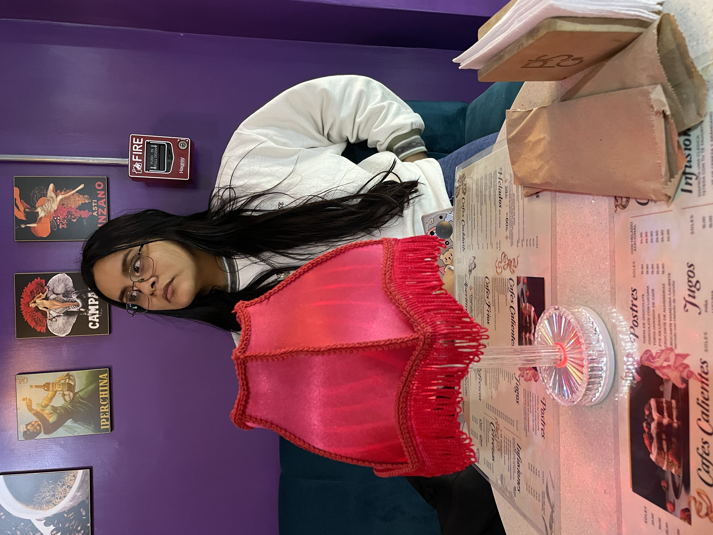

¡Feliz Cumpleaños María!💖
💖Querida María
Creo que lo que uno dice debe tener concoordancia con lo que uno hace. Sé que esta semana ha sido complicada, y la culpa es mía; como bien dices, lamentarme no solucionará nada, pero me hace preguntarme: ¿Qué puedo hacer para cambiar lo que pasó? Y haré que cambie absolutamente todo lo malo para que ambos podamos avanzar. Pero creo que el punto de estas líneas no es decirte lo malo, sino también lo bueno que ha ocurrido desde que has llegado a mi vida. Desde que llegaste a mi vida, le agregaste color a las cosas, a mis días, a mis noches, a mis buenos días, a mis saludos y a mis despedidas. Le agregaste color a mis opiniones, a mis pensamientos, a mis sueños, a mis ideas. Me diste una cosa más por la que luchar y por la que inspirarme a ser mejor. Y eso es algo de lo que estaré agradecido eternamente contigo. En esta fecha tan especial para ti, quiero recordarte lo mucho que te quiero y lo importante que eres para mi, tu sonrisa y tu presencia alegra el corazón de todas las personas que te rodean, porque ciertamente tu amor no tiene límites
📸 Momentos Juntos


Eres alguien única porque...
- Tu sonrisa le da color hasta el día más gris
- Tu corazón siempre piensa en los demás
- Tu me inspiras a ser mejor persona
- Tu forma de escuchar hace que me sienta comprendido
- Tú mirada detiene el tiempo a mi alrededor
- Tú mirada hace que te enfoque como una cámara
- Tú mordidas me dan vida
- Tú compañia hace que los días se vuelvan extraordinarios
- Tú presencia hace que mi corazón palpite como el de un colíbri
Para ti, Maria:
Mágica, por tu forma de ilumar cada día
Aauténtica, sin miedo a quien eres
Radiante, como tu sonrisa
Inigualable, porque no hay nadie como tú.
Amorosa, con tu corazón que ama el mundo
🎨 Galería


✉️ Cartas
Carta 1
Querida Wafer Quien diría que hasta hace unos años atrás estaba solamente escribiéndote poemas, cartas y buenas noches por chat. El tiempo, eventualmente me permitió estas al frente tuyo leyéndote esta carta y me parece gracioso porque hace unos días volví a leer el ultimo poema que te hice y una parte decía así: “Siempre suelo decir que el tiempo dirá, pero esta vez solo le pido al tiempo que nos de una oportunidad”. Tal parece y si manifesté en exceso. Cuando te vi esa vez al lado del taxi al que robaron, sentí como si me hubieran tirado un baldazo de nostalgia y recuerdos o tal vez fue el sudor de haber caminado 4 cuadras para recogerte, las cuales volvería a caminar sin dudar las veces que sean necesarias para ir por ti. El tiempo nos permitió llegar a la tercera salida, la cual hizo que las cosas dieran un giro de 180 grados, te mentiría si dijera que no me acuerdo como me sentí antes y después del beso. Antes de hacerlo, me sentía muy angustiado con tu reacción y después de hacerlo, mi mente quedó en blanco cuando no debió ser así. Conociéndome, debía de estar muy nervioso por lo que pasaría después, pero no fue así, literalmente estaba viviendo el presente. Ahora, conociendo esta nueva faceta de ambos, me he dado cuenta de que tanto tus besos como tus abrazos me traen al presente y que presente para más bonito. Como se lo pedí al tiempo antes, se lo vuelvo a pedir ahora, deseo que ambos podamos conocernos más en esta etapa y que ambos podamos resolver cualquier conflicto que se aparezca porque realmente quiero que se den las cosas. Como te dije hace unos días, las palabras no son suficientes pero te digo nuevamente que te quiero mucho y que me tienes a mi para cualquier cosa que necesites.
Carta 2
Es curioso como las almas se encuentran en ciertas ocasiones, en este caso, la mía se encontró con María Fernanda luego de haber tenido una conversación con ella por llamada en la que dije algo que la puso triste. Ciertamente, sentí un poco de culpa haberle respondido así y sentí que lo mejor fue salir a comer para intentar calmar la situación con ella, porque me di cuenta que le importaba mucho y siempre he sido de la idea de que a la gente que le importo, no la puedo lastimar y se debe quedar conmigo para siempre. La llamada fue un domingo 13 de abril y habíamos quedado en salir el 15, entre todas las opciones que mencionamos, al final fuimos a Él Ravioli, restaurante que ella recomendó. Hasta ese entonces, no era tan fan de ir a comer a lugares cerca a mi casa, pero ella mencionó que las pastas estaban muy buenas, entonces no tuve problema para aceptar. Ese martes, estaba un poco nervioso, después de todo, iba a ver a la persona a la que solo había visto unas semanas en persona y luego nuestra historia se fue construyendo en base a chats de messenger, whatsapp e indirectas por estado. Antes de verla, el taxi en el que ella estaba yendo fue víctima de un robo, de tantos taxis que pudieron robar y de las horas que pudieron elegir, eligieron concretamente la hora y el taxi en el que ella estaba. Lamentablemente, María no pudo con la presión municipal y la dejaron esperando hasta que vuelva el dueño del taxi, quién fue a buscar su celular robado. Por ello, tuve que ir a buscarla y caminar 4 cuadras largas para ir a ayudarla e ir a comer sin problemas. Ciertamente al verla por “primera vez” después de tantos años, de todas las reacciones que pude tener, la primera que tuve fue nerviosismo, porque no pude sostenerle la mirada los primeros minutos que nos vimos.
Carta 3
Querida Wafer Hay una frase que me gusta decirte mucho y es por eso que la vengo repitiendo un par de veces esta ultima semana, esta frase evoca de mi corazón y de mis sentimientos hacia ti. No solo por su significado, sino también porque es lo que quiero contigo. Esta frase cobra más sentido un viernes 23 de Mayo, ese día que salimos mi cabeza estaba un poco distraída y recuerdo que te diste cuenta de ello por lo que me repetías en varias ocasiones si me encontraba bien. Yo ciertamente te respondí que sí las veces que me preguntaste, me encantó demasiado tu preocupación sin siquiera haberte dicho algo sobre como estaba; pero lo que más me encantó fue lo que sentí con el abrazo que me diste ese día. Tú abrazo, no fue solo un “abrazo”, fue “El Abrazo”. Este abrazo me trajo al presente y me llenó de una tranquilidad enorme frente a la inquietud en mi cabeza. Sin duda, un abrazo que quiero sentir toda mi vida, un abrazo que dure una eternidad. No es la primera vez que me siento así contigo, recuerdo haberte dicho que cuando te veo, es como si alrededor de tus hermosos ojos y de tus largos cabellos hay una aura que difumina tu contorno. Como si mis ojos solo te enfocaran a ti, tal cual una cámara con un objeto en medio. ¿Sabes? Me gusta mucho sentirme así contigo porque me encanta tu energía y me encantas tú. Se que te lo digo muchas veces, pero me gusta decírtelo, después de todo, nunca está de más recordarte lo mucho que te quiero, lo mucho que te aprecio,
Carta 4
Creo que en más de una ocasión me has escuchado decir que tienes mi apoyo para lo que necesites, y quiero que eso no solo se demuestre en estas semanas, las cuales se que han sido y son muy estresantes para ti. Sino también quiero que se demuestre por la eternidad, repetirte constantemente que tienes mi apoyo es un recordatorio de lo mucho que te quiero y de lo mucho que me importas. Me importas tanto, que no dejaré que pases momentos frustrantes o de estrés sola. Eres increíble mi chica preciosa, y te lo recordaré las veces que sean necesarias para que nunca dudes del potencial que tienes en ti y de lo maravillosa que eres. Siempre que lo necesites, tendrás un abrazo mío para que puedas afrontar lo que venga. Y siempre que sea necesario, multiplicaré mi apoyo para que puedas afrontar aún mejor las cosas, porque tienes mi amor y mi apoyo incondicional frente a cualquier situación, te quiero mucho
Carta 5
Querida wafer Ya te lo he dicho varias veces, pero es que no me canso de decirlo debido a lo que significa para mi. Cuando te veo, el resto del mundo se desenfoca, y es como si mis ojos actuaran como una cámara y tu eres mi enfoque principal. Me hace mucha ilusión que al verte el resto del mundo es como si no existiese, y te quiero ver así por siempre corazón. Es muy bonito quedarme viéndote a los ojos y poder decir que esos son los ojos que quiero ver por toda la vida, e incluso cuando las cosas se pusieron grises, te seguía viendo de ese modo. Creo que a veces las palabras se pueden quedar cortas o hasta incluso repetitivas por la falta de vocabulario, pero te lo diré las veces que sean necesarias, me encantas mucho y te quiero bastante. Eres muy importante para mi y sabes que puedes contar conmigo siempre, para lo que necesites. Te quiero mucho mucho mucho mucho mucho, muchísimo.
Carta 6
Querida Wafer Esta vez, te debo la carta en físico. Y es que por cuestiones de tiempo, no pude escribirla como es de costumbre. Esta carta tiene un tono un poco más especial, ya que es tu cumpleaños o las vísperas de este. Han pasado 7668 días desde que viniste al mundo y tu presencia no solo alegra los corazones de tu familia y amigos, también alegra la mía. Haciendo cálculos, te conocí hace 3128 días, en 2017. No puedo estar mas que agradecido que hayas entrado a mi vida desde aquel enero de dicho año. Nuestra historia, creo que ya la conoces, fingí amistad cuando realmente quería amor. Las cosas no se dieron en ese entonces por diversos factores, pero el destino y el universo tenían cosas muy distintas para nosotros. Es así como este año, las cosas que creí que en algún momento iban a pasar contigo de adolescente, pasaron. Exactamente hace 101 días, fue que nos vimos después de muchos años de idas y venidas; y exactamente hace 93 días nos dimos nuestro primer beso, en aquella banca que ya conoces y le tengo tanto cariño. Desde aquel beso, supe que las cosas iban a cambiar y si que han cambiado. Sé que nuestro comienzo luego de dejar de hablar, fue pésimo, y siempre y toda mi vida estaré arrepentido de eso. No hay disculpas tan grandes que pueda remediar lo que hice y entiendo lo mal que te hizo sentir. Si pudiera retroceder el tiempo, lo haría e intentaría remediar las cosas, pero el pasado forma parte de nuestra historia mas no tiene porque ser una piedra en el camino para lo que nos depara el presente y el futuro. Hoy en tu cumpleaños, quiero agradecerte por todo, por tu amor, por tu cariño, por tu consideración, por tu palabra de apoyo, de aliento, de afirmación, por escucharme, por estar para mi, por los abrazos, por las caricias, por los besos, por las disculpas, por las alegrías, por las tristezas, por lo que me has enseñado, por hacerme mejor persona y mejor hombre, por tu sonrisa, por los buenos días, por las buenas noches, por las mordidas, por el aprecio, por las cosquillas, por tus enojos, por compartir tu vida conmigo, por lo bueno y por lo malo. Porque todo eso forma parte de ti y ahora también es parte de mi, y no podría estar más agradecido porque sea así. Te deseo un muy feliz cumpleaños, te deseo una vida muy prospera, te deseo mucha suerte en lo que queda de carrera y en todo. Estaré para ti cuando logres todo ello porque quiero verte feliz y triunfar. Quiero una vida a tu lado, y haré todo lo que esté en mis manos para que sea así. Asimismo, te pido perdón por todo lo malo que te he hecho sentir, sabes que mis intenciones no son malas contigo, solo quiero verte sonreír. Te quiero muchísimo Maria.
🔮 ¿Qué nos depara el futuro?
- ✅ Ver el amanecer en la costa verde
- ✅ Aprender a estacionar juntos
- ✅ Celebrar nuestras graduaciones
- ✅ Viajar juntos a pueblitos
- ✅ Escalar montañas
- ✅ Seguir riendo hasta que nos duela el estómago
- ✅ Bailar salsa juntos
- ✅ Crear nuestra tradición navideña
- ✅ Hacer galletas navideñas cada año
- ✅ Celebrar los carnavales
- ✅ Celebrar un año nuevo juntos
- ✅ Celebrar los cumpleaños familiares
- ✅ Casarnos juntos
- ✅ Contarle a nuestros hijos como nos conocimos
- ✅ Tener una plantita juntos
- ✅ Tener una mascota juntos
- ✅ Construir un hogar
- ✅ Cocinar todos los días con salsa de fondo
- ✅ Comprar una pollería con más gastos que ingresos
- ✅ Grabaremos vídeos para fechas claves
- ✅ Creceremos como árboles, con raíces entrelazadas, pero siempre conectados
- ✅ Tomaremos el café más amargo juntos todos los días
- ✅ Tendremos nuestra propia biblioteca y nuestro propio cine en casa
- ✅ Nos sentaremos a ver la estrellas
- ✅ Comeremos cada min pao de todos los locales que encontremos
- ✅ Tomaremos una foto en la misma banca donde nos dimos nuestro primer beso para ver como crecemos
- ✅ Iremos a la playa
- ✅ Viajaremos a japón
"El futuro es un lienzo en blanco, y lo quiero pintar contigo."